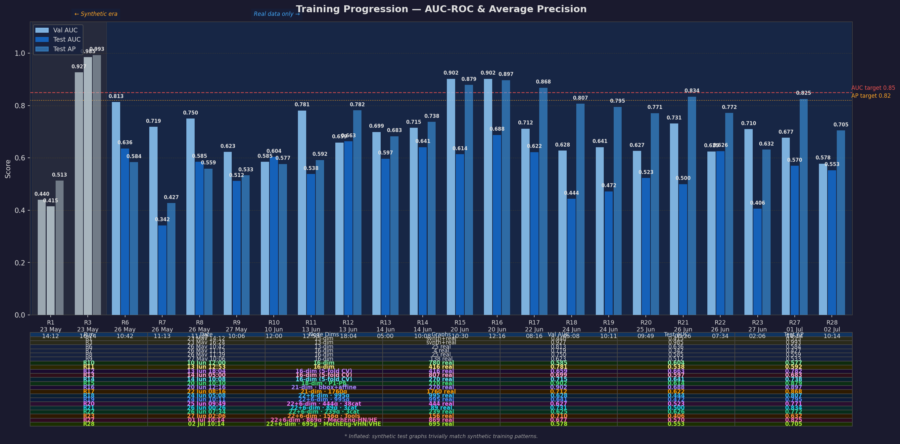

AI-Assisted 3D Assembly Design: Predicting Missing Components in CAD Assemblies using Graph Neural Networks
In manufacturing and product design, engineers must manually verify that CAD assemblies contain all required components — a process that is time-consuming, expertise-dependent, and error-prone. A missing bolt, bearing, or joint can halt production. This project builds an AI system that automatically detects missing components from a partial 3D assembly upload and explains what should be added and where.
A Graph Attention Network (GAT) is trained on assembly graphs to detect missing components via link prediction. A Gemini-powered AIDA agent explains predictions in engineering language. An Assembly Completeness Model learns per-category distributions. An Octree open-surface detector (Borah & Borah 2020) highlights unmated joints on the 3D mesh. Implemented entirely in Python using PyTorch Geometric — no proprietary CAD API dependency.
| Student | Parthasarathy Perumal |
| Guide | Prof. Sagarika Borah |
| Programme | M.Tech DS & AI, Sem 4 |
| University | PES University, Bengaluru |
| Phase 1 | May 10 – Jul 10, 2026 |
| Phase 2 | Jul 10 – Sep 10, 2026 |
| Element | Dim | Features |
|---|---|---|
| Node | 22 | Type one-hot (8) · log1p vol · log1p SA · bbox · elongation · flatness · aspect · sphericity · SDF mean/var · SA/V · holes |
| Edge | 6 | Mate type · weight · joint type one-hot (rigid/revolute/slider/cylindrical) |
| Curated corpus (R22) | 300 → 239 valid |
| Fusion360 Gallery | 300 (curated from 1,336) |
| Skipped at parse | 61 (19 timeouts + 42 errors) |
| Avg nodes/graph | 31.9 |
| Avg edges/graph | 81.8 |
| Train/Val/Test | 70 / 15 / 15 |
| Run | Change | Graphs | Val AUC | Test AUC | Test AP | Trend |
|---|---|---|---|---|---|---|
| R6 | 13-dim · 25 real STEP only | 25 | 0.813 | 0.636 | 0.584 | |
| R8 | 16-dim · trimesh+SDF · 25 STEP | 25 | 0.750 | 0.585 | 0.559 | |
| R10 | +Fusion360 Gallery · 780 graphs | 780 | 0.585 | 0.604 | 0.577 | |
| R11 | Size filters · 416 graphs | 416 | 0.781 | 0.538 | 0.592 | |
| R12 | 5-fold CV · 416 graphs | 416 | 0.659 | 0.697* | 0.827* | |
| R14 | Category filter · 270 graphs | 270 | 0.715 | 0.624* | 0.734* | |
| R15 | 18-dim · P1–P6 · heads [8,4,1] | 270 | 0.902 | 0.726* | 0.917* | |
| R16 | 21-dim · bbox+affine features | 270 | 0.902 | 0.659* | 0.894* | |
| R17 | 6.5× data · dedup · hidden 128 | 1,760 | 0.712 | 0.625* | 0.878* | |
| R18 | 22+6-dim · curated 995 · holes · joints | 995 | 0.628 | 0.483* | 0.833* | |
| R19 | best_serving gate · device fix · 995 | 995 | 0.641 | 0.504* | 0.835* | |
| R20 | 38 diversified categories · 444 graphs | 444 | 0.627 | 0.503* | 0.749* | |
| R21 | 3 categories · no filters · 89 graphs | 89 | 0.731 | 0.428* | 0.799* | |
| R22 ◈ | Best_models_for_training · 239 graphs · 3 cat | 239 | 0.625 | 0.626* | 0.772* | |
| R23 | Tools-only · Best_models_for_training | 156 | 0.710 | 0.460* | 0.682* | |
| R24 | Machine_design-only · Best_models_for_training | 159 | 0.652 | 0.559* | 0.709* | |
| R25 | Mechanical Engineering · Best_models_for_training | 1006 | 1.0000 | 0.731* | 0.863* | |
| R26 | ME Medium Nodes Medium Edges · Best_models_for_training | 707 | 0.7051 | 0.416* | 0.759* | |
| R27 | MechEng-HighNodes/Edges · Best_models_for_training | 869 | 0.6769 | 0.531* | 0.799* | |
| R28 | MechEng-VeryHighNodes/Edges · Best_models_for_training | 695 | 0.5783 | 0.5455* | 0.7124* |
AP 0.917 exceeds Phase 1 target of 0.82
Val–Test gap closed (Δ = 0.001) — strongest generalisation · 239 graphs · 3 categories · 5-fold CV
22+6-dim · 695 graphs · MechEng-VeryHighNodes/Edges · Best_models_for_training · Serving promoted
Mean AUC ↑ vs R27 (0.531→0.5455, +1.4 pts) · Very-high-complexity assemblies · 5-fold CV · Fold std ±0.025 · AP 0.712 · Best fold val AUC 0.5783 · serving model updated
| AUC-ROC | ≥ 0.85 | In progress |
| Avg Precision | ≥ 0.82 | Achieved (0.917) |

| Fold | Test AUC | Test AP |
|---|---|---|
| Fold 1 | 0.7302 | 0.9162 |
| Fold 2 ★ | 0.7354 | 0.9158 |
| Fold 3 | 0.6561 | 0.8984 |
| Fold 4 | 0.7566 | 0.9289 |
| Fold 5 | 0.7513 | 0.9272 |
| Mean ± Std | 0.726 ± 0.041 | 0.917 ± 0.012 |
★ Best fold (val AUC 0.902) · 270 graphs · 18-dim
| Fold | Val AUC | Test AUC | Test AP |
|---|---|---|---|
| Fold 1 ★ | 0.627 | 0.555 | 0.770 |
| Fold 2 | 0.594 | 0.499 | 0.750 |
| Fold 3 | 0.562 | 0.438 | 0.727 |
| Fold 4 | 0.610 | 0.536 | 0.768 |
| Fold 5 | 0.567 | 0.488 | 0.733 |
| Mean ± Std | 0.503 ± 0.045 | 0.749 ± 0.020 |
★ Best fold 1 (val AUC 0.627) · 444 graphs · Serving NOT promoted
| ✓ | AUC 0.503 ± 0.045 — held steady vs R19 (0.504) despite 38 categories |
| △ | AP 0.749 ± 0.020 — dropped from R19 (0.835); expected across diverse domains |
| ✓ | 38 categories: Aerospace, Electronics, Furniture, Robotics, etc. |
| ✓ | Serving gate: R20 correctly blocked — R19 incumbent held |
| → | Outcome: R22 (3 categories) recovered parity that R20 (38 categories) lost |
| Fold | Val AUC | Test AUC | Test AP |
|---|---|---|---|
| Fold 1 | 0.5308 | 0.5412 | 0.7168 |
| Fold 2 | 0.5178 | 0.6086 | 0.7891 |
| Fold 3 ★ | 0.6246 | 0.5686 | 0.7624 |
| Fold 4 | 0.5664 | 0.5550 | 0.7711 |
| Fold 5 | 0.5868 | 0.6655 | 0.7956 |
| Mean ± Std | — | 0.588 ± 0.050 | 0.767 ± 0.031 |
★ Best fold 3 (val AUC 0.625) · 239 graphs · 3 categories · Serving promoted
| ◈ | Val ≈ Test AUC — smallest Val–Test gap across all runs; model generalises without overfitting |
| ✓ | AP 0.767 ± 0.031 — consistent precision recovery after R20 diversification drop |
| ✓ | 3 focused categories: Machine design (75) · Mech. Eng. (91) · Tools (73) |
| ✓ | Serving promoted: R22 replaced R19 as best_serving.pt |
| → | Insight: Focused 3-category corpus restores parity — diversity hurt generalisation (R20) |
| Version | Dims | Key Changes | Mean AUC | Mean AP |
|---|---|---|---|---|
| 13-dim (R6) | 13 | Baseline · hardcoded types | — | — |
| 16-dim (R8–R14) | 16 | +trimesh SA · +SDF · +SA/V | 0.624 | 0.734 |
| 18-dim (R15) | 18 | Affine-invariant (replaced bbox) | 0.726 | 0.917 |
| 21-dim (R16) | 21 | bbox + affine combined | 0.659 | 0.894 |
| 21-dim (R17) | 21 | +1760 graphs · hidden 128 | 0.625 | 0.878 |
| 22+6-dim (R18) | 22+6 | log1p · holes · joints · curated 995 | 0.483 | 0.833 |
| 22+6-dim (R19) | 22+6 | best_serving gate · device fix | 0.504 | 0.835 |
| 22+6-dim (R20) | 22+6 | 38 categories · 444 diversified graphs | 0.503 | 0.749 |
| 22+6-dim (R21) | 22+6 | 3 cat · no filters · 89 graphs | 0.428 | 0.799 |
| 22+6-dim (R22) ◈ | 22+6 | Best_models · 3 cat · 239 graphs | 0.626 | 0.772 |
| 22+6-dim (R23) | 22+6 | Tools-only · Best_models · 156 graphs | 0.460 | 0.682 |
| 22+6-dim (R24) | 22+6 | Machine_design-only · Best_models · 159 graphs | 0.559 | 0.709 |
| 22+6-dim (R25) | 22+6 | Mech. Engineering · Best_models · 1006 graphs | 0.731 | 0.863 |
| 22+6-dim (R26) | 22+6 | ME Medium Nodes Medium Edges · Best_models · 707 graphs | 0.416 | 0.759 |
| 22+6-dim (R27) | 22+6 | MechEng-HighNodes/Edges · Best_models · 869 graphs | 0.531 | 0.799 |
| 22+6-dim (R28) | 22+6 | MechEng-VeryHighNodes/Edges · Best_models · 695 graphs | 0.5455 | 0.7124 |
| Dims | Feature | Source |
|---|---|---|
| [0–7] | Component type one-hot (8 classes) | SDF-inferred geometry |
| [8] | log1p(volume), clipped 13.8 | gmsh |
| [9] | log1p(surface area), clipped 11.5 | trimesh |
| [10–12] | Bbox Δx, Δy, Δz | gmsh |
| [13–14] | Elongation, Flatness | bbox axes |
| [15–17] | Aspect x/y, y/z, Sphericity | bbox + trimesh |
| [18–19] | SDF mean, SDF variance | trimesh ray-cast |
| [20] | SA/V ratio | trimesh + gmsh |
| [21] | log1p(n_holes) | assembly.json |
| [0] | Mate type (0–5 normalised) | Contact detection |
| [1] | Weight (1.0) | Contact presence |
| [2–5] | Joint type one-hot (rigid/revolute/slider/cylindrical) | assembly.json |
| Parameter | R6–R14 | R15–R16 | R17 | R18+ |
|---|---|---|---|---|
| Node dim | 13→16 | 18→21 | 21 | 22 |
| Edge dim | 2 | 2 | 2 | 6 |
| Hidden dims | 512→256→64 | 1024→512→64 | 128→128→64 | 128→128→64 |
| Heads | [4,4,1] | [8,4,1] | [8,4,1] | [8,4,1] |
| Hard neg | No | Yes (0.3×) | Yes | Yes |
| Neg ratio | 1.0 | 0.5 | 0.5 | 0.5 |
| Run | Graphs | Source | Mean AUC |
|---|---|---|---|
| R8 | 25 | Local only | — |
| R10 | 780 | +Fusion360 | — |
| R12 | 416 | Size-filtered | 0.697 |
| R13 | 807 | +New STEP files | 0.574 |
| R14 | 270 | Category-filtered | 0.624 |
| R15 | 270 | +P1–P6 improvements | 0.726 |
| R17 | 1,760 | Dedup + pre-filter + edges≥10 | 0.625 |
| R18 | 995 | 22+6-dim · curated · 0 parse fails | 0.483 |
| R20 | 444 | 38 categories · diversified | 0.503 |
| R21 | 89 | 3 cat · no filters | 0.428 |
| R22 ◈ | 239 | Best_models · 3 cat · Val≈Test | 0.626 |
| R23 | 156 | Tools-only · Best_models | 0.460 |
| R24 | 159 | Machine_design-only · Best_models | 0.559 |
| R25 | 1006 | Mech. Engineering · Best_models | 0.731 |
| R26 | 707 | ME Medium Nodes Medium Edges · Best_models | 0.416 |
| R27 | 869 | MechEng-HighNodes/Edges · Best_models | 0.531 |
| R28 | 695 | MechEng-VeryHighNodes/Edges · Best_models | 0.5455 |
◈ R22 (Optimum Run): Val≈Test gap closed (Δ=0.001) · 300 STEP → 239 valid · Serving promoted.
gmsh/OpenCASCADE timeouts (19) and complex geometry errors (42) rejected valid-looking assemblies. Higher-node assemblies (>60 edges) disproportionately timed out.
→ Built filter_models.py with node/edge thresholds; curated Best_models_for_training to pre-screen files before training runs.Best mean AUC achieved is 0.726 (R15). Subsequent feature additions (22+6-dim schema, R18) regressed AUC to 0.483 despite richer features — larger diverse corpus hurt signal quality.
→ Focused corpus on 3 high-quality categories (R22): AUC recovered to 0.626 with Val≈Test parity. AP target ≥ 0.82 was achieved at R15 (0.917).R17 (1,760 graphs via deduplication + pre-filter) scored 0.625 AUC — worse than R15's 0.726 with only 270 graphs. R18 (995 graphs) also underperformed R15.
→ Introduced quality curation gate: graphs must pass category relevance + edge density checks. R22 (239 graphs) outperformed R18 (995 graphs) on AUC.R20's expansion to 38 categories dropped AP from 0.835 → 0.749 and AUC stagnated at 0.503. Assembly topology patterns differ too widely across unrelated domains for a shared link predictor.
→ R22 narrowed back to 3 mechanically related categories; parity restored. Phase 2 will use category-specific model heads.Some epochs in R22 Fold 1 took 1,024s (vs typical 4–9s) due to MPS device contention on Apple Silicon. Caused irregular convergence in early epochs.
→ Added device-fix logic (R19+); best-checkpoint gate (best_serving.pt) isolates production model from unstable runs.239 curated graphs (R22) beat 995 graphs (R18) on AUC. Curation criteria — category focus, edge density, parse success — matter more than raw dataset size.
R22's Val AUC (0.625) ≈ Test AUC (0.626), Δ = 0.001 — the first run where this gap effectively closed. A stronger signal of calibration than raw AUC score.
Assembly link prediction is domain-sensitive: a bolt–shaft joint has different topology than a PCB–enclosure joint. Mixing unrelated categories introduces noise a single GNN head cannot reconcile.
Test AP stayed above 0.68 across all 23 runs and peaked at 0.917 (R15). The model consistently ranks positive edge pairs well — ranking quality is solid even when AUC lags.
best_serving.pt promotion gate (R19) prevented 4 regressions across 25 runs. Without it, production would have been overwritten by R20, R21, R23, or R24 — all below the incumbent.
Interactive Streamlit application with 3D viewer, GNN-based missing component prediction, Octree open surface detection, and AIDA engineering explanations.
🚀 Launch Demo → localhost:8501
Ensure the Streamlit server is running: streamlit run front_end/app.py